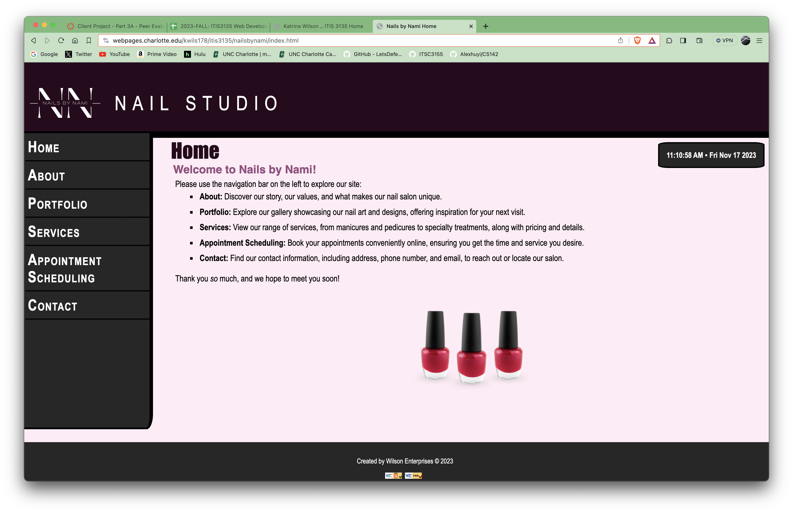

Review 2
Wilson, Katrina
- The submission link leads to the correct page
- The scripts files and the images follow proper naming convention
- Design
- The site uses sufficient contrast and is easy to read, but links on the left side are too far in my opinion and could look better if the color was not blue.
- The site does use css file, but they are not in a separate folder.
- The site follows the C.R.A.P. principle well.
- The page has header and footer,both in a separate file. But is missing main.
- Header has a title but no h1, instead h1 is in body.
- Site does not utilize main,and uses a h1 in body.
- The site has designed by on every page, does not have an slogan, which is understandable for this type of site.
- Page has footer but does not have menu for user's page, instead the menu is in the nav bar, but it does have html and css validation.
- Overall the site fulfills most of the requirements on the checklist, but some things need to changed to fully complete the checklist.